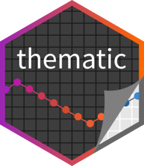
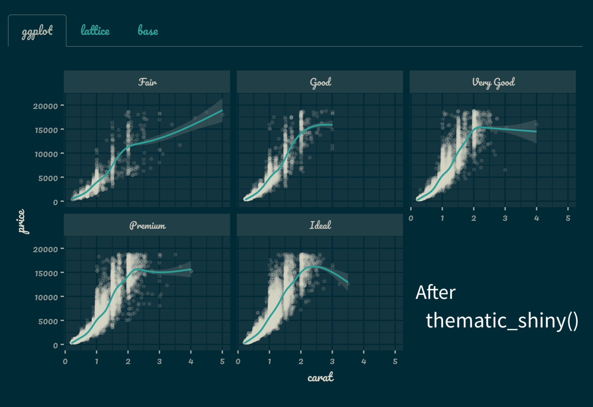
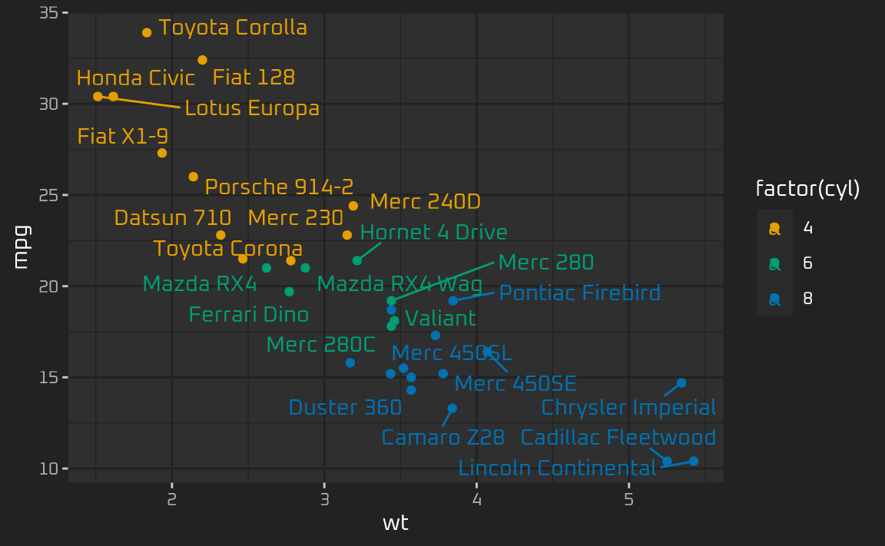
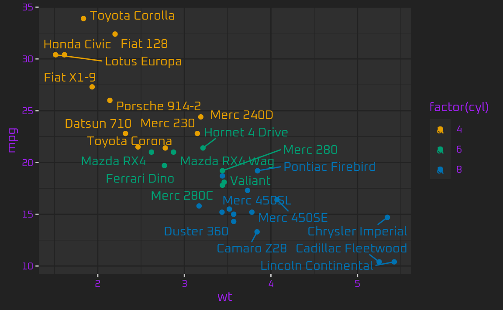
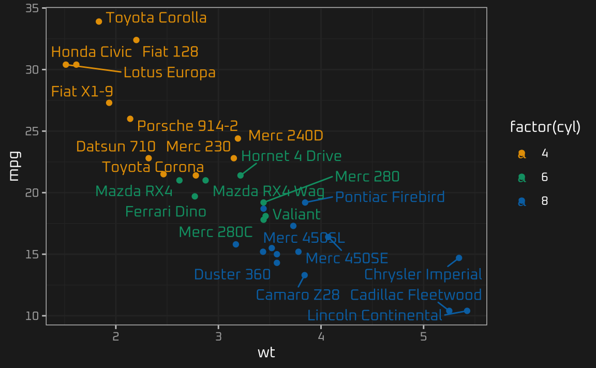

thematic 
Simplified theming of ggplot2, lattice, and {base} R graphics. In addition to providing a centralized approach to styling R graphics, thematic also enables automatic styling of R plots in Shiny, R Markdown, and RStudio.
Installation
Install the stable release of thematic on CRAN with:
install.packages("thematic")Auto theming in Shiny requires shiny 1.5.0 or higher:
install.packages("shiny")Auto theming in R Markdown requires rmarkdown 2.7 or higher:
install.packages("rmarkdown")Using themes with custom fonts works best if you have showtext and/or ragg installed.
install.packages("showtext")
install.packages("ragg")Overview
thematic’s auto theming gives R plots the ability to style themselves inside Shiny (via CSS), RStudio (via RStudio themes), and R Markdown (via {bslib}).
Shiny
Call thematic_shiny() before launching a Shiny app to enable thematic for every plotOutput() inside the app. If no values are provided to thematic_shiny(), each plotOutput() uses the app’s CSS colors to inform new R plotting defaults. If the app uses Google Fonts (and you have showtext and/or ragg installed), you may safely provide font = "auto" to thematic_shiny(), which also translates CSS fonts to R. Here’s an example with the Pacifico font:
library(shiny)
library(ggplot2)
library(thematic)
# In order for auto/custom fonts to work properly, you'll want
# either the ragg (or showtext) package installed
library(ragg)
# If you want `{ragg}` to handle the font rendering in a Shiny app
options(shiny.useragg = TRUE)
# Call thematic_shiny() prior to launching the app, to change
# R plot theming defaults for all the plots generated in the app
thematic_shiny(font = "auto")
ui <- fluidPage(
# bslib makes it easy to customize CSS styles for things
# rendered by the browser, like tabsetPanel()
# https://rstudio.github.io/bslib
theme = bslib::bs_theme(
bg = "#002B36", fg = "#EEE8D5", primary = "#2AA198",
# bslib also makes it easy to import CSS fonts
base_font = bslib::font_google("Pacifico")
),
tabsetPanel(
type = "pills",
tabPanel("ggplot", plotOutput("ggplot")),
tabPanel("lattice", plotOutput("lattice")),
tabPanel("base", plotOutput("base"))
)
)
server <- function(input, output) {
output$ggplot <- renderPlot({
ggplot(mtcars, aes(wt, mpg, label = rownames(mtcars), color = factor(cyl))) +
geom_point() +
ggrepel::geom_text_repel()
})
output$lattice <- renderPlot({
lattice::show.settings()
})
output$base <- renderPlot({
image(volcano, col = thematic_get_option("sequential"))
})
}
shinyApp(ui, server)

RStudio
Call thematic_on() before generating plots inside RStudio to have all subsequent plots shown in the “Plots” viewing pane to reflect your RStudio theme. Note that thematic_on() enables thematic for the remainder of the R session, but you can use thematic_off() to disable (or thematic_theme() for one-off use of {thematic}). Here’s an example of how thematic can intelligently adapt each plot to the current RStudio theme:

R Markdown
Call thematic_rmd() before generating plots inside R Markdown to have all subsequent plots within the document reflect the relevant theme. In a static (i.e., non-runtime: shiny) R Markdown context, auto-theming only works with {bslib}-powered rmarkdown::html_document() (as in the example below), but in other situations you may also provide colors and fonts explicitly to thematic_rmd().

Custom theming
By default, thematic attempts to detect the relevant background, foreground, and accent colors. However, you may also specify these settings more directly by providing relevant color and fonts directly to thematic_on() (or thematic_shiny()/thematic_rmd()).
library(ggplot2)
thematic::thematic_on(bg = "#222222", fg = "white", accent = "#0CE3AC", font = "Oxanium")
ggp <- ggplot(mtcars, aes(wt, mpg, label = rownames(mtcars), color = factor(cyl))) +
geom_point() +
ggrepel::geom_text_repel()
ggp
thematic works by setting new global defaults that can always be overridden with plot-specific theme()-ing code:
ggp + theme(text = element_text(colour = "purple"))
To use a “complete” ggplot2 theme with thematic (e.g., theme_bw(), theme_minimal(), etc), use theme_set() to set the theme globally. This way thematic has the opportunity to preserve the complete theme’s styling semantics when changing global defaults (e.g., theme_bw() uses the same fill color for the panel and plot background, which is semantically different from the theme_gray() default):

In addition to setting new defaults for main colors and fonts, thematic also sets defaults for qualitative (and sequential) colorscales. See the custom themes article to learn more about how to customize those defaults.
Learn more
- See the auto theming article to gain a more detailed understanding of how auto theming make styling R plots easier in Shiny, R Markdown, and RStudio.
- See the custom themes article for more on thematic’s theming options as well as how they interact with ggplot2, lattice, and
{base}. - See the fonts article for more on using Google Fonts with thematic.
- See the scoping article for more about scoping thematic to individual plots.
Run some examples
Below is a link to an RStudio Cloud instance with some ready to run thematic examples:

Code of Conduct
thematic is released with a Contributor Code of Conduct. By contributing to this project, you agree to abide by its terms.